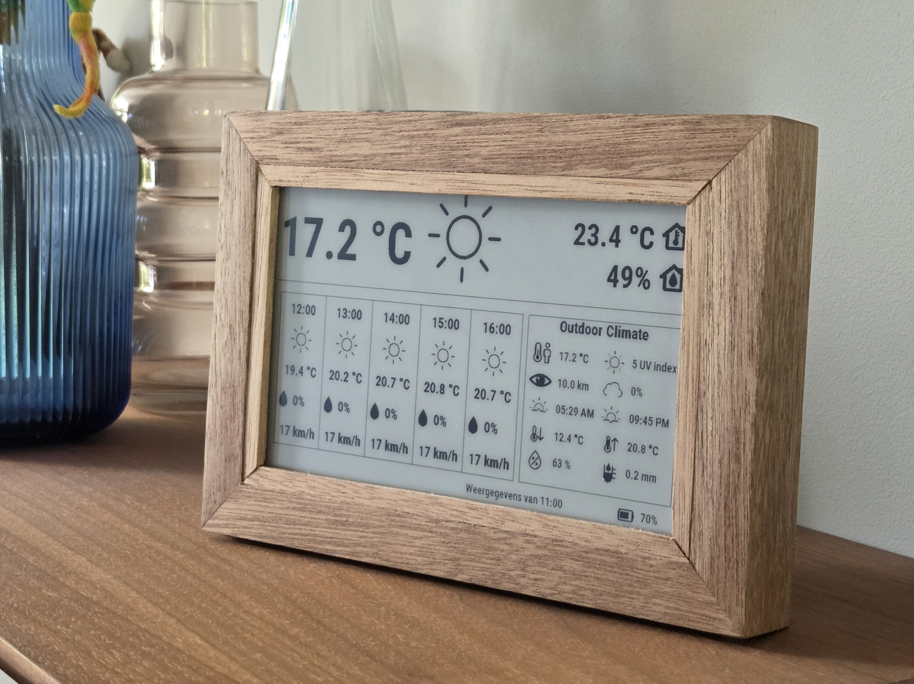

StratusDash - 04-2025 t/m heden
StratusDash is een batterijgevoed e-paper weerstation dat binnenklimaat en weersverwachtingen toont op een rustig, altijd zichtbaar display. Ik bouwde het systeem van prototype naar een kleine pilot-batch van zeven apparaten die nu door vrienden en familie worden gebruikt.

Context
Het idee begon thuis met een klein weerstation dat steeds batterijen leeg trok en waarvan de buitenmodule onbetrouwbaar was. Tijdens een schoolproject kreeg ik de kans om de basis van een beter alternatief te bouwen. Na die eerste tien weken ben ik er zelfstandig mee doorgegaan: firmware, backend, frontend, hardwarekeuzes, behuizing, assemblage en deployment.
Het doel was niet alleen een werkend prototype. Het was een product dat mensen echt in hun huis kunnen plaatsen zonder er dagelijks aan te hoeven denken.
Mijn rol
Ik werkte als product engineer aan alle onderdelen:
- Firmware: ESP32-firmware, deep sleep, sensormetingen, e-paper rendering, OTA-updates en device pairing.
- Backend: FastAPI-backend, MariaDB-database, weerdata-cache, device management en updatekanalen.
- Frontend: gebruikersaccounts, device configuratie, locatiekeuze, pairing-flow, accountverwijdering en i18n voor Nederlands/Engels.
- Hardware en fabricage: componentkeuze, prototyping, behuizing, houtbewerking en assemblage van zeven units.
Het probleem
Een weerstation klinkt simpel, maar het raakt veel systemen tegelijk. Het apparaat moet maanden op een accu draaien, snel genoeg opstarten om data op te halen, betrouwbaar koppelen met een account, veilig updates ontvangen en voor gewone gebruikers begrijpelijk blijven. De grootste spanning zat tussen gebruiksgemak en low-power gedrag. Elke extra netwerkactie, TLS-handshake of renderstap kost tijd en dus energie.
Wat ik bouwde
Het apparaat gebruikt een FireBeetle 2 ESP32-E, een 7,5-inch Good Display zwart-wit e-paper scherm, een BME280-sensor en een 2500 mAh LiPo. Elke cyclus meet het binnenklimaat, haalt de actuele configuratie en weersverwachting op, rendert de layout naar het e-paper display en gaat terug naar deep sleep.
Aan de serverkant draait een FastAPI-backend op een VPS. De backend beheert gebruikers, apparaten, layouts, OTA-kanalen en een weather cache, zodat externe API-calls niet onnodig vaak worden gedaan. De database gebruikt MariaDB met Alembic-migraties en constraints voor datakwaliteit.
De webapp is tweetalig via i18n en is bereikbaar via:
Belangrijke technische keuzes
Batterijduur
Het huidige apparaat haalt ongeveer 3 tot 5 maanden op een acculading. Met metingen via mijn Coulomb Counter heb ik de sluipstroom teruggebracht naar ongeveer 54 uA. De grootste winst zit nu niet meer in deep sleep, maar in het verkorten van de tijd dat de CPU wakker is.
De firmware is momenteel Arduino-gebaseerd. Een toekomstige ESP-IDF rewrite zou helpen om HTTP/TLS efficiënter te maken, onder andere door connecties langer open te houden en session resumption te gebruiken. Ook een statisch IP kan de WiFi-connectietijd verkorten. Daarmee kan de actieve tijd mogelijk van 12-18 seconden naar 6-8 seconden.
Device pairing
Het apparaat koppelt via een QR-code aan een gebruikersaccount. De firmware genereert een pairing attempt en een private device secret. De gebruiker scant de QR-code en claimt het apparaat via de webapp, terwijl het apparaat de claimstatus ophaalt bij de backend. De uiteindelijke API-token wordt alleen naar het fysieke apparaat teruggestuurd als het de private secret kent.
Deze flow voorkomt dat iemand met alleen de publieke QR-link de device-token kan stelen. Over het koppelproces is hier meer over te lezen.
Productwaardige backend
De backend ondersteunt OTA-updates met aparte dev/acc/stable-kanalen. Daardoor kan ik mijn eigen apparaat op dev laten draaien en gebruikersapparaten alleen stabiele builds geven. Ook ondersteunt het systeem accountverwijdering met cascading cleanup van apparaten, tokens en metingen.
Behuizing
De behuizing is gemaakt uit zelf behandeld merantihout. Ik heb alles gezagen, gefreesd, geschuurd, gebeitst, gelakt en gelijmd. Binnenin zit een 3D-geprinte omhulsing voor alle hardware, waarbij ook is nagedacht over ventilatie en repareerbaarheid. Dit gedeelte van het project heeft veel tijd gekost, maar ik heb zo veel geleerd en ik ben enorm trots op het eindresultaat.
Telemetry
Nadat de apparaten bij gebruikers waren geplaatst, voegde ik telemetry toe om de gezondheid en prestaties van de vloot te volgen. Per run registreert de firmware onder andere de Wi-Fi-signaalsterkte, verbindingstijd, actieve tijd, HTTP-status en foutcodes. De firmware bewaart foutinformatie in RTC-geheugen, zodat ook fouten uit de voorgaande run na de volgende succesvolle verbinding kunnen worden gemeld.
Met deze gegevens ontdekte ik dat apparaten bij een zeer slechte Wi-Fi-verbinding tot ongeveer 2,2 minuten actief konden blijven door een HTTP-time-out. Dat is significant, want dat is 7 keer langer wakker dan normaal, wat dus ook 7 keer zoveel energie gebruikt.
Ik paste de time-outconfiguratie aan en verspreidde de wijziging via het bestaande OTA-systeem. Daarmee kon ik een probleem dat pas in echte gebruiksomstandigheden zichtbaar werd centraal detecteren, analyseren en voor de volledige vloot oplossen. Na de update heb ik via het dashboard gecontroleerd dat de actieve tijd bij slechte verbindingen van maximaal 132 seconden naar 27 seconden is gegaan en de fout niet opnieuw optrad.
Resultaat
Ik heb zeven StratusDash-units gebouwd en geleverd aan echte gebruikers. Het project groeide van schoolprototype naar een klein product met firmware, backend, frontend, hardware, website, privacybeleid en een onderhoudbaar updateproces.
Voor mij is StratusDash het bewijs dat ik een embedded product end-to-end kan bouwen. Een klant zei tegen mij dat wat ik heb gemaakt een kunstwerk was. Dat was mijn doel wat ook echt zichtbaar iets toevoegt aan een huis. En het heeft ook nog een goede gebruikerservaring ook, want dat vind ik erg belangrijk.
Wat ik leerde
StratusDash leerde mij vooral hoe duur elke productkeuze wordt zodra hardware, firmware, backend en gebruiker samenkomen. Wil je meerdere layouts? Dat kan, maar dan moet de rendering van de data compleet aangepast worden. Wil je een houten behuizing? Dat gaat jou enorm veel tijd kosten als ontwikkelaar.
Ook leerde ik dat low-power optimalisatie pas echt nuttig wordt wanneer je meet. Zonder mijn Coulomb Counter had ik veel minder precies geweten waar de energie verdween en niet kunnen berekenen wat voor batterij ik nodig had.
Wat ik nog ga leren
Ik ga ook nog dingen leren in dit project. Ze zijn recentelijk allemaal het huis uit, maar nu moet ik nadenken over de volgende stap.
- Het Root TLS certificaat zal over een paar jaar verlopen. Dan moet op een mooie manier afgehandeld worden.
- Elke Firebeetle leest het batterijvoltage net anders uit. Dit is te kalibreren, maar hier moet ik even heel erg goed over nadenken.
- Het herschrijven van het project naar ESP-IDF zal nuttig zijn om de code beter te structureren en om de werktijd te verminderen.
Technische proof
- StratusDash Pairing Architectuur - technische deep dive over het koppelproces.
- Coulomb Counter - gebruikt om het stroomverbruik te meten en optimaliseren.
Gebruikte technologieën
Arduino ESP32 E-Paper BME280 FastAPI MariaDB Alembic OTA i18n VPS